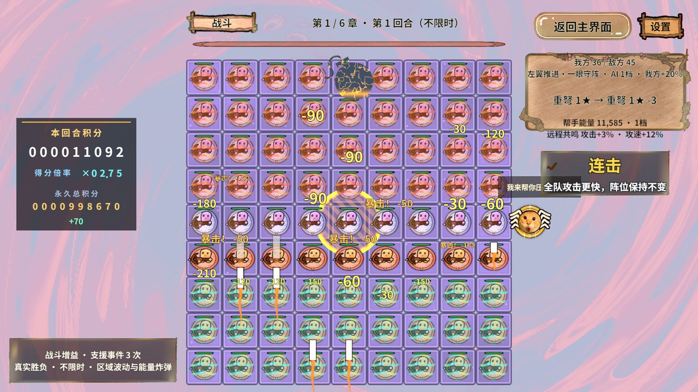
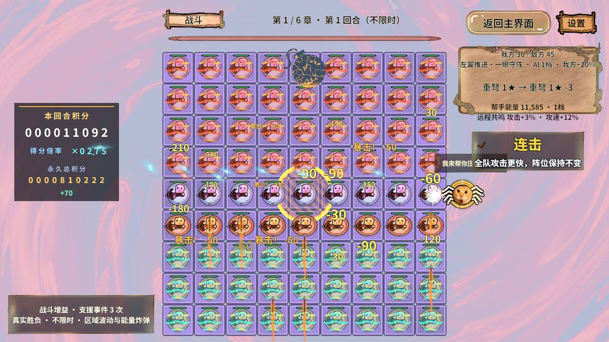
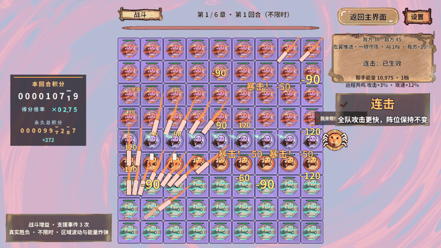
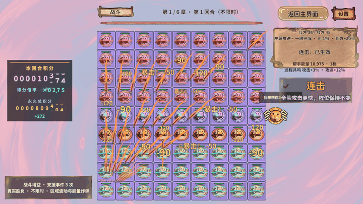

01 · 结论：卡顿不是单一 tick 问题
本轮在 i7-12700H / Intel Iris Xe / DX11 / Unity 2022.3.15f1c1 / 1920×1080 上运行真实PC AB。满盘为36玩家＋45敌方，共81个独立重弩身份，并保持20飘字／35弹道／16近战预算。重弩场景实际近战为0；高生命与每秒补血用于维持压力，不代表正常难度。
“能量巨大”确有落地窗口尖峰。来源分为CPU首次装配与GPU大面积透明特效两类：加载过预制体不代表创建过实例，分帧创建也不会自动降低随后每帧Shader的像素成本。本轮同时处理了这两类工作。版本为b89bd75基础上的本地修改，PC资源重新构建；不是干净提交上的跨设备对照。
白色弹幕已定位到清空SpriteRenderer参数块后丢失图集纹理，已恢复发射时的显式绑定。几何缓存、共享材质、原画和三层弹道保留。这里修的是白色方块占位，圣光与爆炸原本的亮白高光没有删掉。
02 · 同设备81棋：完整保留四段峰值测量
| 版本/轮 | 平均FPS | 整帧P95 ms | 炸弹触发CPU ms | 落地窗最慢帧 ms | 落地窗GPU峰值 ms | 波动触发CPU ms | 波动窗最慢帧 ms | 炸弹/波动命中数 | 每帧格面启动峰值 |
|---|---|---|---|---|---|---|---|---|---|
| 优化前/1 | 28.861 | 64.985 | 9.202 | 117.860 | 57.780 | 17.038 | 76.463 | 45/12 | 未计 |
| 优化前/2 | 34.655 | 51.881 | 0.245 | 108.353 | 27.478 | 1.736 | 76.118 | 45/12 | 未计 |
| 优化后/1 | 36.448 | 49.703 | 17.199 | 77.841 | 39.606 | 6.060 | 81.017 | 45/12 | 12 |
| 优化后/2 | 35.108 | 49.906 | 0.354 | 84.955 | 16.565 | 0.263 | 78.653 | 45/12 | 12 |
每段15秒、2.5秒预热，种子1026，真实GM在采样约2秒触发炸弹、约8秒触发区域波动。炸弹窗口是实际落地事件后2秒；波动窗口是预警后4秒。触发耗时只含同步GM调用，炸弹落地发生在后续规则tick中。窗口峰值不能当成技能单个函数的耗时，FrameTiming也可能延迟返回。
两轮落地窗最慢帧观测由117.860/108.353降至77.841/84.955ms，GPU峰值由57.780/27.478降至39.606/16.565ms；仅为本轮观察，不是控制温度/频率后的长期保证。区域触发由17.039/1.736降至6.060/0.263ms，窗口最慢帧反而76.463/76.118→81.017/78.653ms，必须保留这个负结果。首次炸弹触发9.202→17.199ms，没有宣称改善。
每段81存活/81视图、81身份出手，炸弹45次真实伤害、区域12次真实伤害，退出后棋盘销毁、战斗Logic与PieceFrames引用归零。日志临时过滤为Error，采样不截图、不写CSV、不导出Profiler。两个轮次不足以排除系统调度/热状态影响。
03 · 实际修改：分帧安排在哪里
| 入口 | 原集中工作 | 本轮实现 | 边界与代价 |
|---|---|---|---|
| SceneResourceWarmup.WarmBattlePoolsAsync | 过去只预载BossSkillFx资源，没有预创建技能实例。 | 过场持有8组Boss＋2组炸弹余量；每组90个槽分批准备，每帧最多6片/约3ms。全部完成才交付战斗。 | 增加加载时间与暂驻节点数量；单个Unity调用不可抢占，3ms不是硬实时承诺。 |
| BossSkillFxView.WarmSlotsAsync / ResetSlots / Apply | Awake一次创建90个GameObject/Renderer；每次重置遍历90片，动画反复查UV/texture。 | Awake只建容器；Reset只清实际使用槽；每槽按图集BindingVersion缓存UV与Texture，回池清引用。 | 复用原RevPool与图集租约；未经过正式过场的开发夹具仍保留按需兜底。 |
| BoardCellView.PrepareTransientVisuals | 区域波动首发创建HazardOverlay；首轮跳格创建VictorySurface并枚举子节点。 | 移入原有每帧4格/约3ms的建盘流程，预先准备危险层、跳跃层及参数块。 | 全部在过场遮罩内完成，不移动Collider或棋盘模型。 |
| BoardView.SkillScheduling | 一次大范围技能同时为很多格创建Tween。 | Boss与区域各81个固定槽，共享每帧最多12格/约2ms的装配预算；跨帧游标公平遍历。同格新请求替换旧请求。 | 保存事件起始时间，播放时快进排队时间；换轮/退出清空队列，过期残影不补播。 |
| BossSkill.shader | 全屏冲击波的透明区域仍计算噪声/atan2；纯程序化效果也采原图。 | 按噪声最大扰动0.03保守剔除两圈之外的透明像素；爆炸按最大半径1.15提前返回；仅需要源像素的模式采图。 | 不降分辨率、不缩小冲击波、不关背景；减少的是无贡献像素数学，GPU工作不能靠CPU分帧全部解决。 |
| BattleEffectView.ShowProjectile | 今天改为SetPropertyBlock(null)，连SpriteRenderer的_MainTex绑定也清掉。 | 发射时用现有参数块写真实图集纹理与UV，本体/轮廓/尾迹复用同一个块；继续共享材质。 | 保留有限写入成本，正确显示优先；不用“没有参数块”作为视觉通过标准。 |
新手理解：异步加载像把材料运进仓库，预热实例像提前搭好舞台。以前“资源加载完成”之后，第一发技能才搭90块舞台；现在在过场中分批搭好。格面队列则把同一帧的许多动画装配摊开，但每格仍读取同一次技能的时间，避免波浪落后于伤害。
没有将伤害分成几帧：炸弹仍在原模型步中对全部敌人按原顺序结算。否则先杀谁、谁能复活、何时判胜和气眼更新都可能变化。此次分帧的是显示与实例装配，规则、攻击频率、数值表与81棋负载不变。
04 · 源码阅读顺序与生命周期
- GameScripts/Flow/Loading/SceneResourceWarmup.cs
- GameScripts/View/Combat/Effects/Boss/BossSkillFxView.cs
- GameScripts/View/Board/Feedback/BoardView.SkillScheduling.cs
- GameScripts/View/Board/Cells/BoardCellView.cs
- GameScripts/View/Board/Cells/BoardCellView.BossSkills.cs
- GameScripts/View/Combat/Effects/BattleEffectView.cs
- GameShader/Combat/BossSkill.shader
- Editor/RevGame/GameBattleMeasuredChecks.cs
- Editor/RevGame/GameBossImpactPlayChecks.cs
- Editor/RevGame/GameReadabilityChecks.cs
主要代码新增中文注释，说明预算的单位、谁持有队列、为何回池先取消旧动画、图集什么时候失效，以及为什么规则不能按显示预算截断。另做10万组随机参数的CPU数学边界检查，验证被早退的冲击波/爆炸采样原式确实透明；它不替代真实GPU画面。框架快照的已有外部修改未纳入本轮优化；业务仍通过RevPool、RevTask、RevEvent、RevResManager和GameFlow运行。
05 · 改成15 tick/秒会更快吗
当前配置Battle.TickSeconds=1.25、Battle.StepsPerTick=4，实际模拟小步为0.3125秒，约3.2Hz。15Hz是增加频率，不是降低频率。只改外层回调而不改内部累积器，不会减少完整规则工作；若回调仍传0.3125秒，还会把游戏时钟加速，不能这样修改。
新增Editor独立探针在真实81棋中看到每15秒48次tick，单次平均约2.95～4.36ms，最慢7.00～15.24ms（含同步事件回调，发生在白弹幕修复阶段）。它会造成个别尖峰，但不能解释所有40～120ms帧间隔，更不能解释炸弹窗口的高GPU耗时。
| 独立.NET实验（48棋） | 60模拟秒外层调用数 | 五轮CPU总耗时中位ms | 攻击数 | 最终位置/HP指纹 |
|---|---|---|---|---|
| 原模型3.2Hz/外层3.2Hz | 192 | 60.261 | 3759 | 相同 |
| 只改外层15Hz，模型仍3.2Hz | 900 | 66.130 | 3759 | 相同 |
| 内部改19步/周期≈15.2Hz | 912 | 112.866 | 3759 | 不同 |
以上链接真实模型/配置，单独进程1轮预热＋5轮交替顺序；没有Unity渲染、存档、对象池或手机时钟。每组3759次攻击；15.2Hz最终HP/位置指纹不同，不应直接作为等价优化上线。精确15Hz不能只把整数StepsPerTick改成18.75；内部步长变化还涉及帮手激光“每步伤害/扣分”、冷却量化和事件先后。正式配置本轮未改。
06 · 81棋、六章Boss与验证边界
| 章 | FPS | P95 ms | P99 ms | 最慢ms | GPU P95 ms | 攻击 | 存活/视图最小 | 出手身份 |
|---|---|---|---|---|---|---|---|---|
| 1 | 28.515 | 61.060 | 92.628 | 142.856 | 6.494 | 1449 | 81/81 | 81 |
| 2 | 39.813 | 44.376 | 55.302 | 75.166 | 5.362 | 1548 | 81/81 | 81 |
| 3 | 32.264 | 50.498 | 67.478 | 89.732 | 6.112 | 2012 | 81/81 | 81 |
| 4 | 24.977 | 68.297 | 97.562 | 125.039 | 5.945 | 1818 | 81/81 | 81 |
| 5 | 25.915 | 66.695 | 154.073 | 205.835 | 6.068 | 1890 | 81/81 | 81 |
| 6 | 29.324 | 57.026 | 69.600 | 98.203 | 5.530 | 1926 | 81/81 | 81 |
本表runId：20261030-143807-b9533c5f。白弹幕修复后、技能分帧优化前；不得冒充最后代码的六章性能复测。
已收集的独立章/技能组合（通过/失败逐行保留）：29。全套覆盖以最后工单状态和下表为准，60招指主动技能，不含血量条件触发的狂暴。Boss靶场包含大型Boss和留空位，不能称为81颗独立棋；81棋满盘不能覆盖大型Boss/移动补子。Boss截图回归不作为无截图性能A/B。
展开逐章逐技能断言结果
| 章 | 技能 | 施放段数 | 真实伤害事件 | 伤害合计 | 每帧格面启动峰值 | 结果 |
|---|---|---|---|---|---|---|
| 1 | Cleave | 1 | 1 | 9 | 12 | 通过 |
| 1 | Snipe | 1 | 1 | 12 | 1 | 通过 |
| 1 | MeteorShower | 3 | 9 | 18 | 9 | 通过 |
| 1 | GravityWell | 3 | 9 | 19 | 12 | 通过 |
| 1 | StarStorm | 5 | 11 | 18 | 12 | 通过 |
| 1 | BlackHole | 1 | 5 | 5 | 9 | 通过 |
| 1 | CometRails | 2 | 8 | 12 | 12 | 通过 |
| 1 | AstralShards | 3 | 3 | 3 | 1 | 通过 |
| 1 | EventHorizon | 3 | 6 | 9 | 11 | 通过 |
| 1 | ConstellationSeal | 2 | 12 | 28 | 12 | 通过 |
| 2 | Bombard | 3 | 10 | 50 | 9 | 通过 |
| 2 | ChainLightning | 3 | 3 | 6 | 1 | 通过 |
| 2 | FlameWall | 3 | 6 | 15 | 9 | 通过 |
| 2 | SolarFlare | 1 | 20 | 24 | 12 | 通过 |
| 2 | SunBrand | 3 | 15 | 15 | 1 | 通过 |
| 2 | SolarSpears | 3 | 7 | 11 | 12 | 通过 |
| 2 | EmberFan | 2 | 8 | 20 | 12 | 通过 |
| 2 | MagmaRings | 3 | 2 | 4 | 9 | 通过 |
| 2 | PhoenixDescent | 3 | 7 | 8 | 9 | 通过 |
| 2 | SolarEclipse | 2 | 3 | 9 | 12 | 通过 |
| 3 | BlinkBlast | 1 | 3 | 34 | 12 | 通过 |
| 3 | TidalSurge | 3 | 9 | 16 | 9 | 通过 |
| 3 | Maelstrom | 3 | 15 | 29 | 12 | 通过 |
| 3 | TidalLances | 3 | 11 | 15 | 12 | 通过 |
| 3 | FoamBurst | 3 | 9 | 9 | 9 | 通过 |
| 3 | Undertow | 2 | 5 | 11 | 10 | 通过 |
| 3 | ReefSpikes | 1 | 2 | 8 | 8 | 通过 |
| 3 | LeviathanWake | 4 | 14 | 19 | 12 | 通过 |
| 3 | AbyssalCage | 2 | 7 | 16 | 12 | 通过 |
07 · 失败、恢复与未验证项
- 首次连接默认Python3.7不支持missing_ok，改用已安装Python3.13与常驻RevMCP；未控制桌面。
- PC AB构建被过期字库输入清单拦截，按tools/font-subset.py重建1644字符字库后校验通过。构建请求客户端超时后，读取同一Unity工单确认59包成功，没有重复发起构建。
- 第一次Boss回归到第三章BulletRing，伤害/特效/格面通过但实际AudioSource播放未被观察到。保留失败；原音效仅0.235秒，测试诊断日志大量刷屏。降低普通日志输出后仍复现，故不能据此认定日志是根因；声音断言未改，最终逐招失败仍保留。
- 旧完整CombatPacingRegression在“攻击GM接受”失败（测试传1，配置上限0.6）；独立旧Region断言又在“大棋跨多格也只伤一次”失败，且它仍要求区域伤害友军；本轮没有修订这套旧测试或改变规则。没有篡改期望来宣称全套通过。真实GM专项已验证两类技能的实际命中数量，模型代码本轮没有改动。
- Android仅有构建入口的Shader预检；未做Android AB构建/手机真机、独立Player、10分钟热稳态、温度/频率归因或每招无截图GPU A/B。不导出Profiler录制/内存快照，不生成ZIP。
五职业反馈回归：尚未完成
08 · 真实画面与动效证据




09 · 后续针对低端机的修改方案
- 先测最终Editor与独立Player差异。当前GPU稳态与墙钟帧间隔不一致，Editor诊断输出、窗口呈现、调度和GC需要分开。不能从EditorLoop中直接减出“游戏FPS”。本机约16GiB内存、一次只读快照余量约1.74GiB；这提示内存压力，需要持续证据，不能认定已经发生换页。
- 处理仍贵的技能GPU。在同样画面下测冲击环、爆炸、章节专属中心场各自像素成本；进一步限制确定透明的区域、缓存静态形状，并验证不同时间/UV/边缘。不能把CPU任务分帧当成GPU成本消失，也不靠隐藏背景或削掉弹幕数量交差。
- 首次播放仍需单独治理。本轮实例预热不等于所有Tween/JIT/音频解码/GPU管线已预热。首次炸弹触发未改善，应在过场内做受控首次使用探针，分别定位播放路径和音频解码，不把全目录预加载当解决方案。
- 反馈与显示继续按证据优化。保留现有文案、投影、射界缓存；不要重复实施已经完成的优化。对剩余约1～2ms/帧反馈开销分解文字网格、遮挡、Tween与渲染提交，再做同输入复测。
- 验收标准。相同81棋、种子、1920×1080、完整画质，至少三轮交替A/B，单独首次和热态；记录P95/P99/最慢帧与真实攻击。80FPS需P95≤12.5ms，90FPS需≤11.11ms，并补10分钟与退出回收。当前没有达到这些目标。
框架可行性结论：Revolution现有异步/资源/池/事件/流程门面能够承载分帧预热与受控回归；框架并不会自动替业务拆开90个Renderer或优化全屏Shader，项目仍须维护预算、时钟、失效和视觉验收。